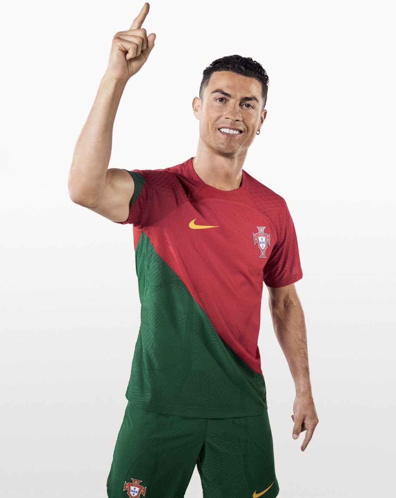
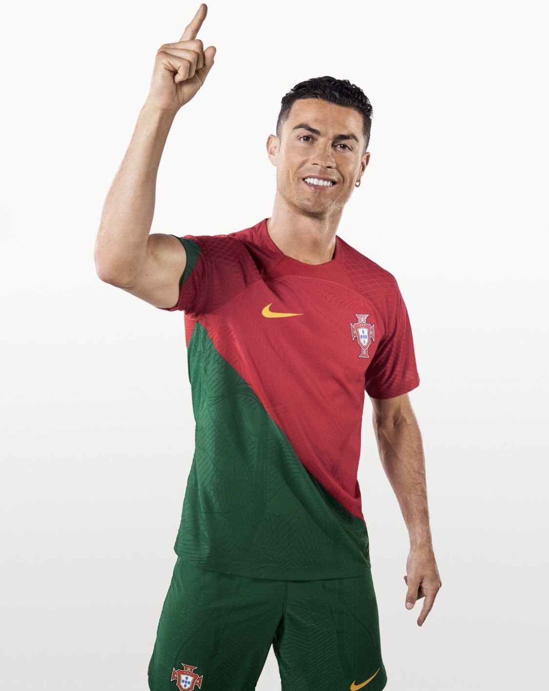
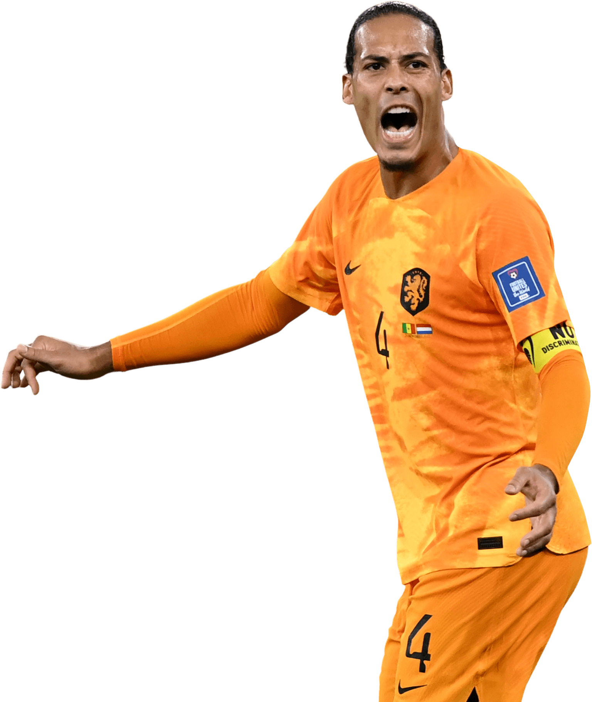
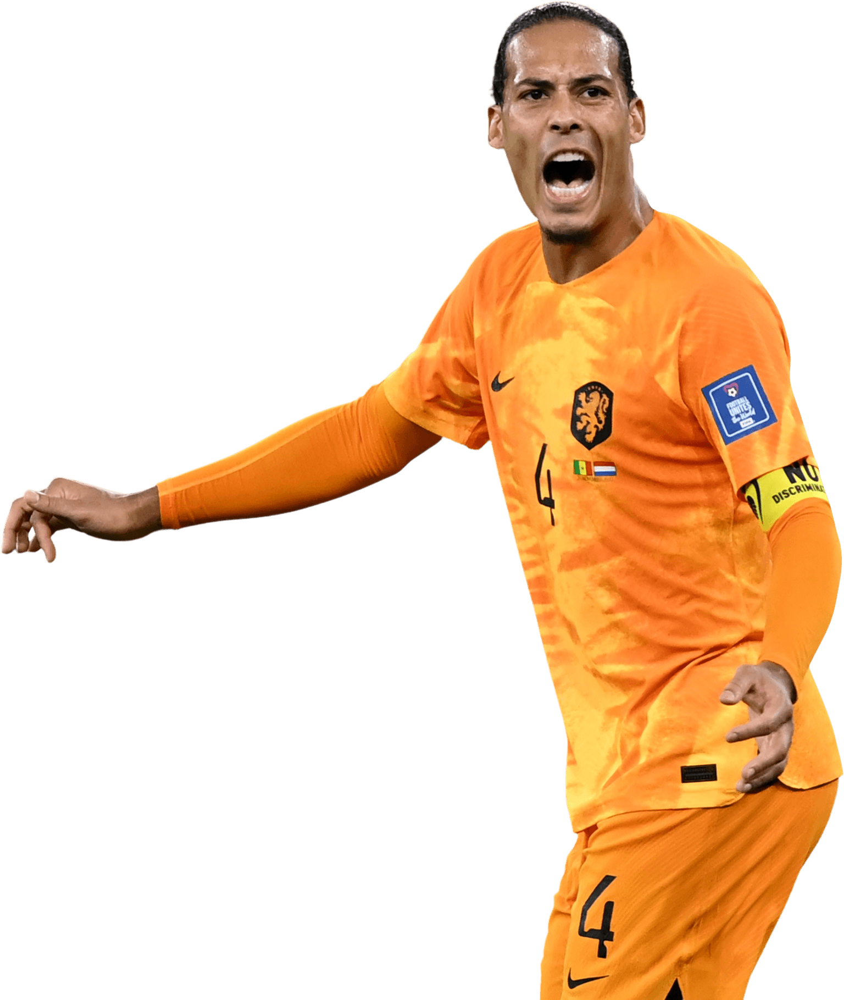

COPA DO MUNDO 2026 - Os 6 melhores jogadores do mundo!
A Copa do Mundo FIFA de 2026 ou o Campeonato Mundial de Futebol FIFA de 2026 será a vigésima terceira edição deste evento esportivo, um quadrienal torneio internacional de futebol masculino organizado pela FIFA, anfitriã da competição em conjunto por 16 cidades em três países da América do Norte: Canadá, Estados Unidos e México. O processo de escolha da sede deveria ter começado em 2015, com a nomeação de anfitriões previamente agendada pelo Congresso da FIFA em 10 de maio de 2017 em Kuala Lumpur, capital da Malásia. Em 10 de junho de 2015, foi anunciado que o processo foi adiado, em meio a alegações de corrupção em torno dos torneios anteriores, como em 2018, na Rússia, e em 2022, no Catar. Em 13 de junho de 2018, durante o 68.º Congresso da FIFA, a candidatura tripla de Canadá, México e Estados Unidos foi escolhida para sediar o torneio. Esta edição será a primeira que contará com 48 seleções, conforme a decisão da FIFA sobre a expansão do número de seleções presentes (eram 32 seleções), tomada no dia 10 de janeiro de 2017. Será a primeira vez que o Canadá receberá partidas da Copa do Mundo; os Estados Unidos já sediaram anteriormente a competição em 1994; já o México sediou a competição em 1970 e 1986, tornando-se o país que mais vezes sediou a competição.
youtubeJogadores
 

.jpg) 
